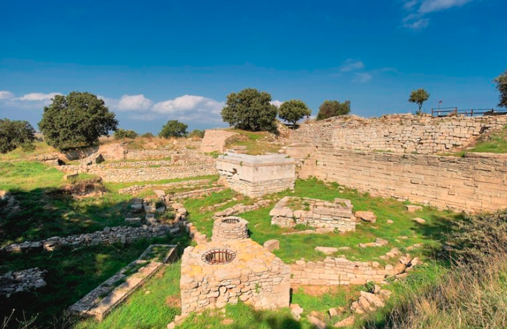

TRUVA ANTİK KENTİ VE TRUVA ATI
Homeros’un kaleminden çıktığı düşünülen meşhur İlyada Destanın da anlatılan Truva Savaşı’nın yapıldığı antik kent. Troya, Troia ya da bizim bildiğimiz adı ile Truva. 1996 yılında Milli Park statüsüne ancak sokulabilmiş olan antik kentten çıkarılan bir çok parça ise bugün maalesef Almanya ve Rusya’ya kadar dağılmıştır. Antik kent aynı zamanda 1998 yılından bu yana da Dünya Miras Listesi’nde yer almaktadır.Truva Antik Kenti, Çanakkale ilimizde bulunmaktadır.
Truva Atı Hikayesi
Hikayeye göre Akhalılar yıllar süren mücadeleye rağmen hiçbir şekilde Truva’yı ele geçiremezler. Bir kuşatma sonrasında yine vazgeçmek üzere iken tanrılardan yardım isterler. Tanrıların verdiği fikir ile savaştan vazgeçmiş gibi yaparlar ve geri çekilirler. Geri çekilirken kentin kapısına tahtı atı içerisine asker yerleştirerek bırakırlar. Sevniç çığlıkları ile kutlama yapan Truvalılar atı içeri aldıklarında ise gece kendilerini bekleyen acı sürprizle karşılaşırlar. Bugün antik kentte yer alan at 1975 yılında bir Türk sanatçı tarafından eski bilgiler ışığında yeniden yorumlanarak yapılmış bir modeldir.
Truva Antik Kenti Ziyaret Saatleri ve Günleri
Antik kent haftanın her günü ziyarete açık. Sabah saat 08:00’de kapılarını aralayan antik kent için yaz aylarında kapı kapanış 19:30’da, kış aylarında ise 17:00. Ancak sizi içeride en az birkaç saatinizi alacak bir tur beklediği için hiç bu saatlere kalmadan burada olmanız yararınıza.
Truva Antik Kenti Giriş Ücreti
Örenyeri, Kültür Bakanlığı’na bağlı olduğu için Müze Kart’ınız varsa ücretsiz olarak içeriye girebilirsiniz. Müze kartınız yoksa giriş ücreti için 25 TL ödemeniz gerekiyor.
Truva Antik Kenti Nerede ve Nasıl Gidilir
Truva Ören Yeri, Çanakkale ili Tevfikiye Köyün de yer almaktadır. Çanakkale Tevfikiye Köyü’ndeki Troya Milli Parkı’nın içerisinde yer alan Örenyerine ulaşmak için Çanakkale-İzmir Yolu’nun 30. kilometresindeki Çıplak ve Tevfikiye köylerine sapılan 5 kilometrelik yolu geçmeniz gerekecek.